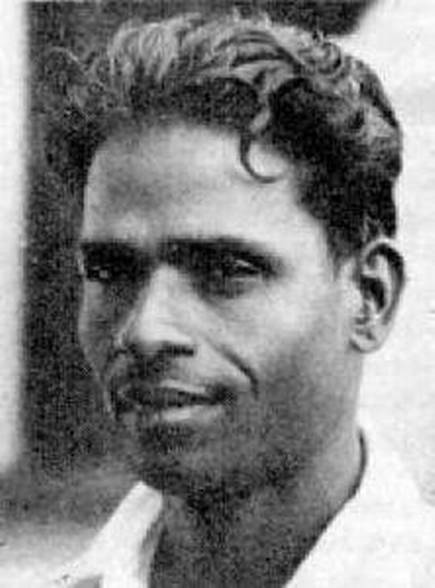

Velu Nachiyar: The Queen Who Defeated the British in 1780

Portrait: Illustration by Shakthi Thevar, Wikimedia Commons, CC BY-SA 4.0
Velu Nachiyar (3 January 1730, 25 December 1796) recaptured her kingdom from the British East India Company in 1780, seventy-seven years before the uprising of 1857. Tamil Nadu remembers her as Veeramangai, the brave woman, and calls her India's first woman freedom fighter. The rest of the country is still catching up.
She was born into the Sethupathi royal family of Ramanathapuram, the daughter of King Chellamuthu Vijayaragunatha Sethupathy and Queen Sakandhimuthal. An only child, she was raised as a male heir would be: trained in horse riding, archery, and the martial arts of valari and silambam, and educated in several languages, including English, French and Urdu. In 1746 she married Muthu Vaduganatha Thevar, the ruler of Sivaganga.
On 25 June 1772, in what is known as the Kalaiyar Koil war, Company troops backed by the Nawab of Arcot attacked Sivaganga. Her husband was killed, and the British looted the treasury. Velu Nachiyar fled with her young daughter and spent eight years in exile at Virupakshi near Dindigul, under the protection of Gopal Naicker. There she met Hyder Ali of Mysore, conversing with him in Urdu and impressing him with her resolve. With support from Hyder Ali, Tipu Sultan, Gopal Naicker and the Marudhu brothers, she built a resistance force that included, by several accounts, an all-woman regiment and a counter-intelligence network.
In 1780 she struck. Her commander Kuyili carried out a suicide attack that destroyed the British arsenal, an act described in Tamil accounts as the first recorded suicide bombing in history, and Velu Nachiyar retook Sivaganga. She ruled for more than a decade afterward, introducing reforms in land, taxation, agriculture, education and the protection of women, before handing the throne to her daughter Vellachi Nachiyar. She died on 25 December 1796.
Official recognition came late but has been growing. On 19 September 2025, Tamil Nadu Chief Minister M. K. Stalin unveiled a life-size statue of the queen at the Gandhi Mandapam complex in Guindy, Chennai, erected by the state's Information and Public Relations department at a cost of fifty lakh rupees, and announced that the police training school in Vellore would be renamed after her. Her story had already featured in the state's Republic Day tableau in 2023. The government release on the occasion noted that she took on the British about a hundred years before Rani Lakshmibai of Jhansi, who fought in the north between 1835 and 1858. She fought the British a century before Rani Lakshmibai of Jhansi, yet national textbooks gave her barely a footnote. The statue is a correction; the history books still owe her the chapter.
Source: The Economic Times, DTNext
Visuals: Archival portrait
Follow the daily five-post slate on Instagram.
Follow on Instagram